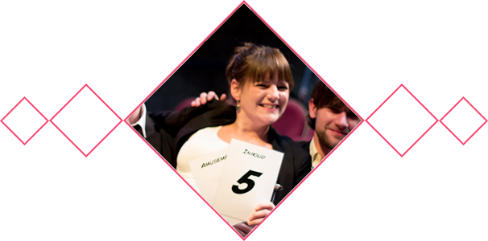

Over het NSK
Oorsprong
Het Nederlands Studentenkampioenschap Theatersport is ontstaan in 1992, als onderdeel van de Pythische Spelen op de Universiteit Twente. Inmiddels is het een jaarlijks terugkerend improvisatieweekend, waar studenten uit heel Nederland aan meedoen.
Theatersport
Theatersport is een vorm van improvisatietheater, gebaseerd op de richtlijnen van grondlegger Keith Johnstone. Twee teams van vier personen nemen het tegen elkaar op in wedstrijden die bestaan uit drie tot zes games/scènes per team. De teams dagen elkaar en zichzelf uit om bepaalde elementen in deze scènes te verwerken. Daarnaast zijn alle scènes ook nog eens gebaseerd op input vanuit het publiek. Dit alles wordt door een driekoppige jury overzien en zij kennen punten toe voor inhoud, techniek en amusement.
Het toernooi
Het NSK bestaat uit twee fases. Zaterdag en zondagochtend spelen de teams in poules tegen elkaar. De beste twee teams per poule gaan door naar de kwartfinale, waarna via een afvalsysteem doorgespeeld wordt. Zondagavond spelen uiteindelijk de twee beste teams van het weekend een volledige wedstrijd van zes games elk tegen elkaar. Iedereen is hierbij welkom.